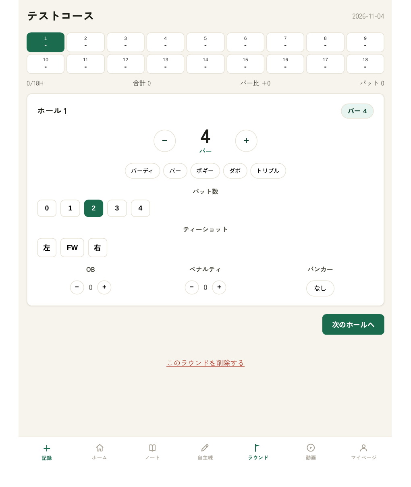
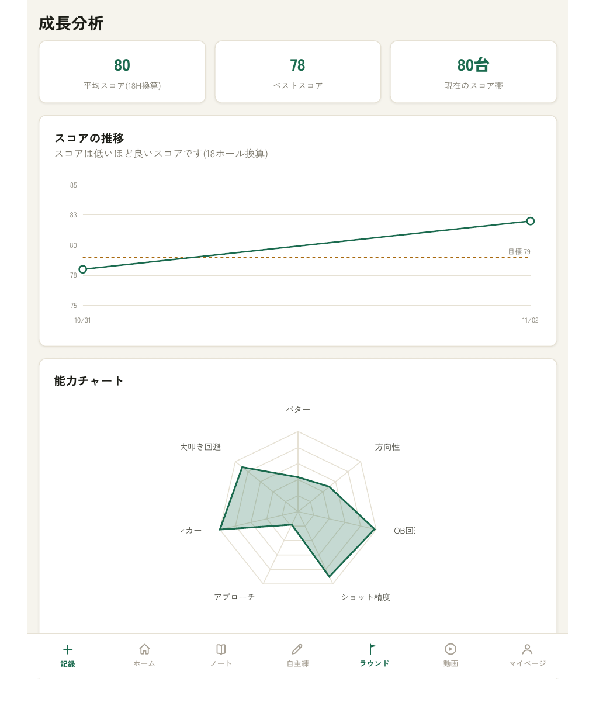
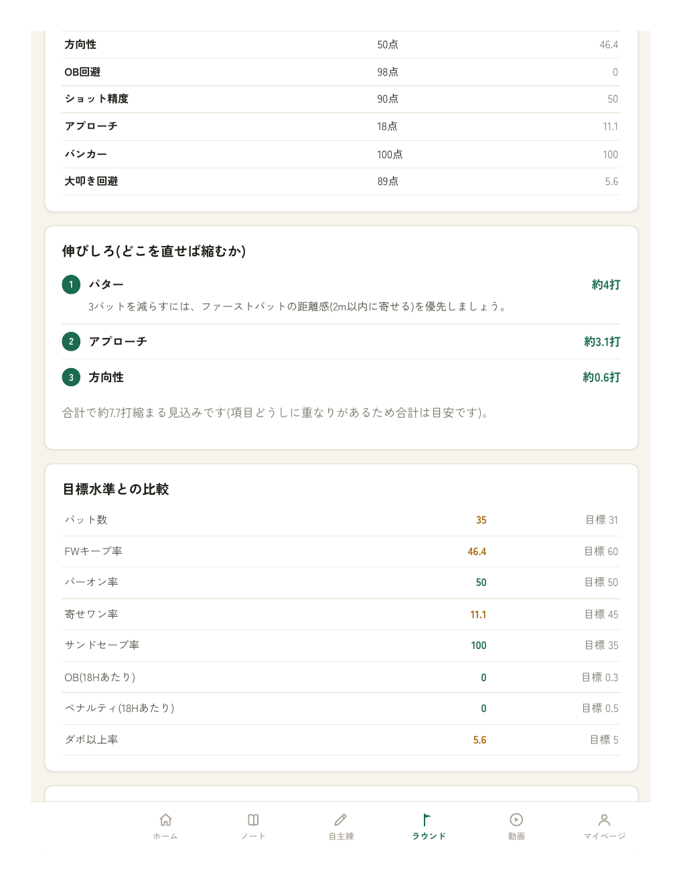
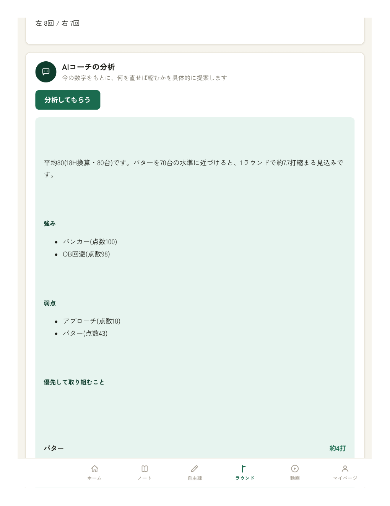

ラウンド記録（ホール入力）
ホールごとにスコア・パット数・ティーショットの方向などをタップで入力。そのままスコアカード代わりになり、ラフ回数やフェアウェイキープ率まで数字で残せます。
※ 画面はテストアカウントの表示例です
AI成長ノート for GOLF SCHOOLS
ゴルフスクール専用・生徒記録ツール
記録するのは、先生ではなく生徒。
AIが要約・分析し、先生はコメントだけ。
カルテの負担を、仕組みでなくす。
＼ まずはオンライン説明から ／
オンライン説明（30分） オンライン説明を予約する（30分・無料）予約ページで日時を選ぶだけ。Google Meetで実際の画面を見ながらご案内します。
創業モニター募集中｜先着5校・11月30日までPROBLEMS
レッスンの合間に先生が記録を書く。その負担は人件費そのもので、忙しい日ほど後回しになります。
書いた・書いていないの行き違いは、そのまま信頼の低下につながります。
先生が時間をかけて書いても、生徒が見ていなければ成長の実感にはつながりません。
上達が見えない生徒は、やがて足が遠のきます。退会を止める鍵は、成長の可視化です。
だからこそ、記録の主役を
「先生」から「生徒」へ。
HOW IT WORKS
生徒が自分で記録し、
AIが要約・分析する。
先生は、コメントだけ。
STEP 1｜生徒
レッスン・自主練・ラウンドを、生徒自身がスマホでその場で入力。1分で終わる軽さが続きます。
STEP 2｜AI
文章はAIが整え、記録の蓄積から弱点と強みを分析。能力7項目を点数化し、伸びしろを打数に換算して、次の課題と練習を提案します。
STEP 3｜先生
記録は自動で届く。先生は気づいたときに一言返すだけで、生徒には大きな付加価値に。
「先生が書くレッスンカルテ」は一般的ですが、書く負担が大きく、書き漏れや未達がトラブルの種にもなります。AI成長ノートは記録の主体を生徒に移すことで、その負担とトラブルをなくし、生徒自身の成長実感まで生み出す仕組みです。生徒が自分で書くこと自体がアウトプットになり、記憶にも残ります。
MOVIE
紹介動画（約79秒）：課題 → 仕組み → 実際の画面 → キャンペーンのご案内
SCREENS

ホールごとにスコア・パット数・ティーショットの方向などをタップで入力。そのままスコアカード代わりになり、ラフ回数やフェアウェイキープ率まで数字で残せます。
※ 画面はテストアカウントの表示例です

スコアの推移と、能力7項目のチャートを自動で表示。1ラウンドの記録からでも、弱点と取り組むべき練習が見えてきます。
※ 画面はテストアカウントの表示例です

項目ごとの点数に加え、「どこを直せば何打縮むか」を打数換算で提示。目標水準との比較で、次にやるべきことが明確になります。
※ 画面はテストアカウントの表示例です

蓄積した記録をもとに、AIが強み・弱点と「優先して取り組むこと」を具体的に提案。生徒は「書く → 見返りがある」をその場で体感できます。
※ 画面はテストアカウントの表示例です
レッスン後に生徒が1分で記録。文章が苦手でもAIが要約・整形します。
練習の内容と気づきを残し、取り組みの履歴を積み上げます。
先生の動画を生徒に届け、記録とあわせて復習できます。
RETENTION
SCHOOL MANAGEMENT KARTE
スクールの経営カルテ月に数人の退会でも、1年で見ると大きな売上機会の喪失になります。まずは自店の数字で試算してみてください。大切なのは、辞める理由を減らすこと以上に、「続く理由」をつくることです。
あなたのスクールの数字を入れてください
スライダーでも、右の数字でも変更できます。初期値は一般的な例です。
試算モデル
1人の退会 = 月会費 × 12ヶ月分の売上機会の喪失、と仮定したシンプルな概算です。年間損失の目安 = 毎月の退会人数 × 月会費単価 × 12ヶ月。
ANNUAL LOSS — 年間損失の目安
¥0
もし、退会が減ったら？
年間 ¥0
AI成長ノートは、生徒が自分の成長を記録し、弱点と次の一手が見える「続く理由を作るカルテ」。成長が見えるから、レッスンが楽しくなり、続ける理由が生まれます。
※ これは概算の試算例です。1人の退会を「月会費×12ヶ月分の売上機会の喪失」と仮定したシンプルなモデルで計算しており、実際の損失額や継続期間はスクール・生徒ごとに異なります。あくまで試算例であり、商品の効果を保証するものではありません。
先着5校2026年11月30日までのお申し込みが対象です
初期導入費
¥300,000 ¥150,000実績づくりのための創業モニター価格です。モニター条件（導入前後の数字の共有、事例・感想の公開許可、最低利用期間など）の詳細は、オンライン説明でご案内します。
創業モニターの説明を聞く オンライン説明を予約する（30分・無料）Q&A
記録はスマホで1分ほどで終わる設計で、レッスン・自主練・ラウンドをその場で入力できます。自分で書くこと自体がアウトプットになり、AIからの分析という「見返り」があるため、続けやすい仕組みです。生徒への案内文のたたき台もご用意するので、導入時の声かけもスムーズに進められます。
はい。ラウンド記録はボタンや数字の入力が中心で、文章は短いメモで十分です。書いた内容はAIが要約・整形するので、読みやすい記録として残ります。大きなボタンとワンタップ中心の入力画面で、ラウンド中でも記録できる設計です。
記録を書くのは生徒自身です。先生の役割は、届いた記録を見て気づいたときに短いコメントを返すだけ。「毎回コメントしなければ」という運用にはしません。カルテを書く時間も、書き漏れの心配も、仕組みごと解消します。
データは店舗ごとに環境を分けて運用します。他のスクールのデータと混ざることはありません。詳しい取り扱いについては、オンライン説明および契約時にご案内します。
生徒の登録と案内が主な作業です。生徒への案内文のたたき台はこちらで用意するので、スクール側でゼロから作る必要はありません。まずはオンライン説明（30分）で、御校の規模や課題に合わせた段取りをご提案します。
まずはオンライン説明（30分・無料）で、
実際の画面を見ながらご案内します。